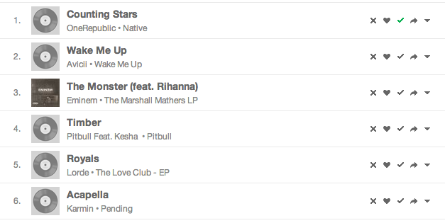

Ban the songs you don't want to listen in Grooveshark
When I'm playing random playlists (like popular, or random songs), sometimes I would avoid several songs I don't like too much. For this reason I created this bookmarklet. You can ban the songs you don't want to listen and shift to the next song automagically.
1) Drag this blacklist-grooveshark to your bookmarks bar!:
2) Go www.grooveshark.com, for instance in your own playlist or popular list.
3) Click in the bookmarklet.
4) A new button with "x" icon appears in every song like this

5) ???
6) Profit!!!
The plugin is split into different files, blacklist-api.js and blacklist-ui.js. The first one implements the required methods and the other creates a interface to use them.
This plugin extends window.Grooveshark object) (here the public API) with a new methods, so another developers can use the blacklist-api to develop another plugins.
I'm taking advantage of some libraries have been loaded for Grooveshark.com,like Lodash or jQuery are. I know they are using require.js and Backbone.js, although I don't want to use its versions - concretely they aren't using all the Backbone components.
Nope. I'm using your window.localStorage object to store the data. Don't worry: This information is just inside in your browser and it will never share with anyone.
Well, I will try this if I have enough time in the near future. Feel free to implement this doing a pull request or creating another repo using the blacklist-api.js.
Copyright (c) 2013 Francisco Cortés
Permission is hereby granted, free of charge, to any person obtaining a copy of this software and associated documentation files (the "Software"), to deal in the Software without restriction, including without limitation the rights to use, copy, modify, merge, publish, distribute, sublicense, and/or sell copies of the Software, and to permit persons to whom the Software is furnished to do so, subject to the following conditions:
The above copyright notice and this permission notice shall be included in all copies or substantial portions of the Software.
THE SOFTWARE IS PROVIDED "AS IS", WITHOUT WARRANTY OF ANY KIND, EXPRESS OR IMPLIED, INCLUDING BUT NOT LIMITED TO THE WARRANTIES OF MERCHANTABILITY, FITNESS FOR A PARTICULAR PURPOSE AND NONINFRINGEMENT. IN NO EVENT SHALL THE AUTHORS OR COPYRIGHT HOLDERS BE LIABLE FOR ANY CLAIM, DAMAGES OR OTHER LIABILITY, WHETHER IN AN ACTION OF CONTRACT, TORT OR OTHERWISE, ARISING FROM, OUT OF OR IN CONNECTION WITH THE SOFTWARE OR THE USE OR OTHER DEALINGS IN THE SOFTWARE.